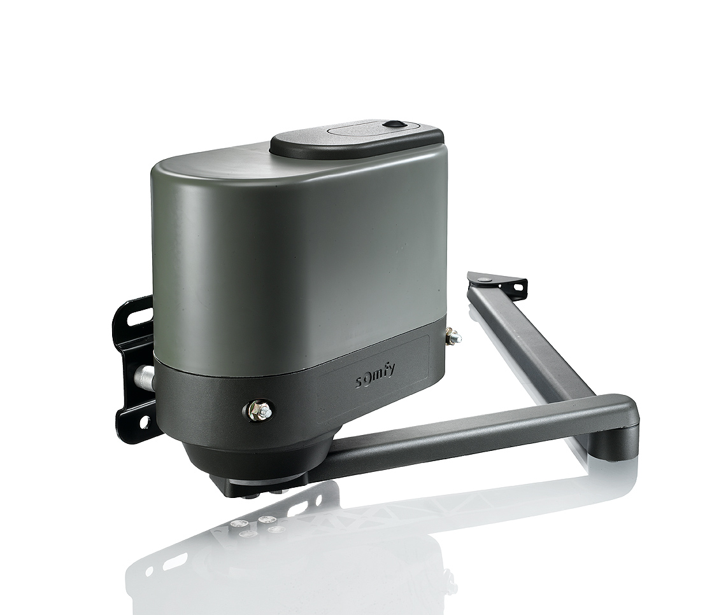
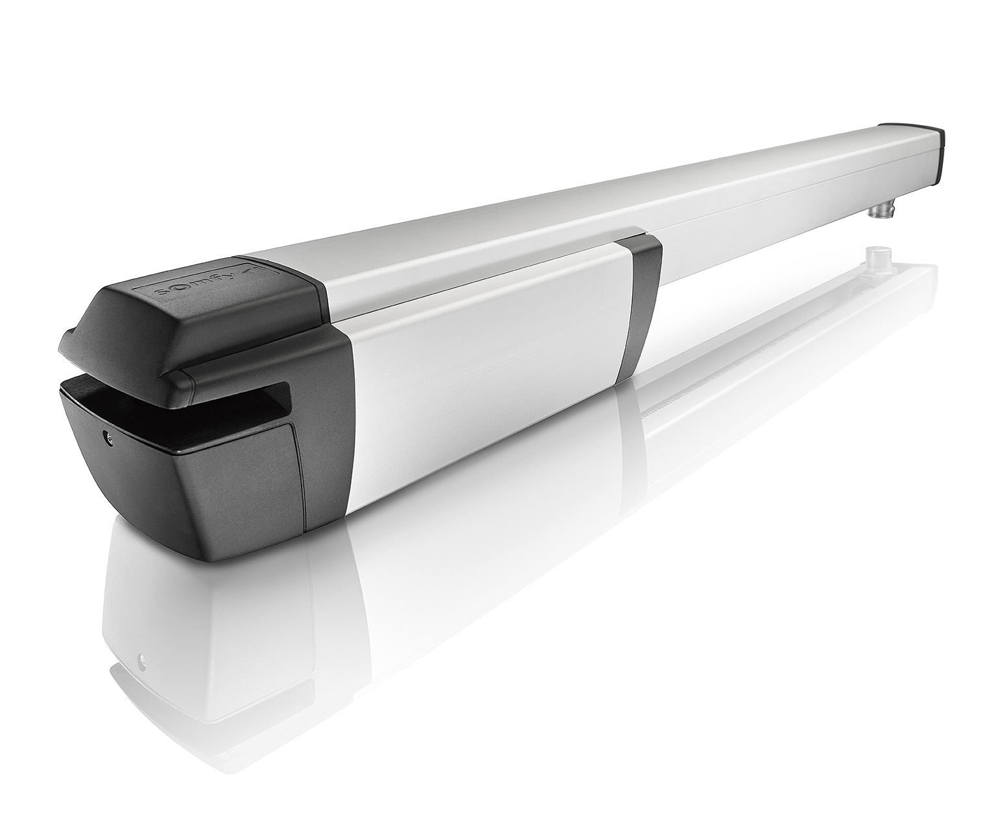

Automaty do Bramy
Nowoczesne, bezpieczne i trwałe napędy do bram
Zaufaj doświadczeniu i 60-letniej tradycji firmy Somfy w produkcji automatyki domowej – i zyskaj nawet 5 lat gwarancji na napędy do Twoich bram.
Twój pierwszy krok do inteligentnego domu Zarządzaj inteligentnie swoimi bramami!
(tutaj cos jeszcze tata)
Elixo500
- Trwałość i niezawodność
- Strefa zwalniania podczas końcowego ruchu bramy
- Wykrywanie przeszkód
- Możliwość podłączenia oświetlenia strefowego, lampy ostrzegawczej, akumulatora zapasowego
- Rozsprzęglenie indywidualnym kluczem
- Budownictwo jednorodzinne (intensywna eksploatacja)
- Możliwość zdalnego sterowania przez Internet wykorzystując centralę smart home TaHoma lub Connexoon
Multi Pro
Napęd do bram dwuskrzydłowych o wadze skrzydła 300 KG oraz szerokości maksymalnej 2,5 M. Uniwersalny napęd do różnych bram skrzydłowych ( głównie z murowanymi i szerokimi słupkami)
Ixengo L 3S io
Zastosowanie: Bramy wjazdowe skrzydłowe - 4 m; 400 kg
Sterwoany z aplikacji
Ixengo L 3S RTS
Zastosowanie: Bramy wjazdowe skrzydłowe - 4 m; 400 kg
Ixengo S 3S RTS
Zastosowanie: Bramy wjazdowe skrzydłowe – 1,8 m; 200 kg
IXENGO
.jpg)
axovia 3s io
Dwukierunkowa technologia radiowa io-homecontrol® (informacja zwrotna) szybkie otwieranie: 90 stopni w 10 sekund soft start i stop różne akcesoria w zależności od zestawu (fotokomórki, pilot Keygo io, lampa ostrzegawcza, akumulator zapasowy) możliwość podłączenia dodatkowego oświetlenia bezpieczne rozsprzęglenie indywidualnym kluczem wyłączniki krańcowe wbudowane w ramiona tryb automatycznego zamykania zintegrowana detekcja przeszkód funkcja furtki -ponad 40 paramtetrów definiujących działanie bramy -zdalne sterowanie przez internet po dodaniu napędu do TaHoma lub Connexoon